6. Algorithm¶
6.1. Tensor Network States¶
Tensor network states (TNS) are variational wavefunctions represented as products of small tensors [TNS]. For example, in the case of \(S=1/2\) spin system with \(N\) sites, a wavefunction can be represented by using the product state basis as
In a tensor network state, \(\Psi_{s_1,s_2,\dots,s_N}\) is represented as a tensor network, e.g,
where \(\mathrm{tTr}[\dots]\) represents tensor network contraction and \(T^{(i)}[s_i]\) is a tensor. In the case of a matrix product state (MPS) [MPS] , \(T^{(i)}[s_i]\) becomes a matrix for a given \(s_i\) and \(\mathrm{tTr}[\dots]\) becomes usual matrix products as
where we assume that shapes of \(T^{(1)}[s_1]\) , \(T^{(i)}[s_i] (i\neq 1, N)\), and \(T^{(N)}[s_N]\) are \(1 \times D_1\) \(D_{i-1} \times D_{i}\) ,and \(D_{N-1} \times 1\), respectively. When we use TNS in order to approximate the ground state wavefunction, the accuracy is determined by \(D_i\). \(D_i\) is usually called as bond dimension. By using a tensor network diagram, MPS is represented as follows:
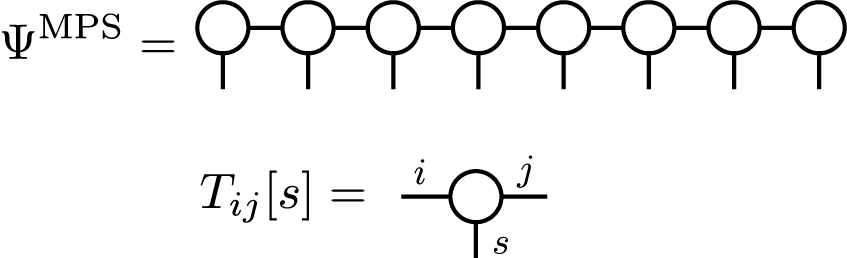This MPS represents a wavefunction for a finite size system. Similarly, we can also consider an infinitely long MPS to represent an infinite system. Especially, when we assume a lattice translational symmetry, with a certain period, we can construct an infinite MPS (iMPS) with a few independent tensors. In the case of two-site periodicity, an iMPS looks as
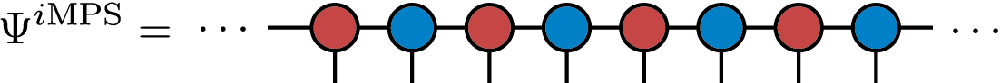where tensors with the same color indicate identical tensors.
In TeNeS, we consider two-dimensional infinite tensor product states (iTNS), which are natural extensions of iMPS to higher dimensions. We assume a square lattice tensor network with a translational symmetry, whose diagram is shown as
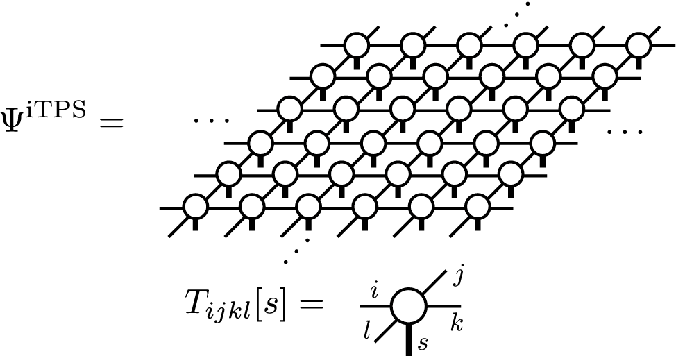and try to find an approximate ground state wavefunction of two-dimensional quantum many-body systems. Notice that square lattice tensor networks can represent lattices other than the square lattice, such as the honeycomb and the triangular lattices, by considering proper mapping.
6.2. Contraction of iTPS¶
In order to calculate expectation values over a TNS, \(\langle \Psi|O|\Psi\rangle/\langle \Psi|\Psi\rangle\), generally we need to contract tensor networks corresponding to \(\langle \Psi|O|\Psi\rangle\) and \(\langle \Psi|\Psi\rangle\). For example, a tensor network corresponding to \(\langle \Psi|\Psi\rangle\) is given by
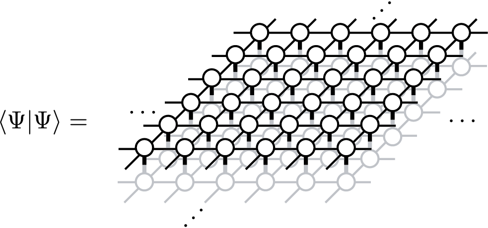which is often called a double layered tensor network. The contraction of a double layered tensor network often needs huge computation costs. In the case of MPS (and iMPS), fortunately, we can contract it efficiently, e.g, by considering a transfer matrix which consists of local tensors. However, in the case of TPS (and iTPS), exact contraction is impossible except for small finite size systems (or infinite cylinders) and we often use approximate contraction methods. Among several efficient methods for contracting iTPS in two-dimension, TeNeS supports corner transfer matrix renormalization group (CTMRG) method [CTMRG], which expresses an infinitely extended double layered tensor network by using corner transfer matrices and edge tensors.
When we simplify the double layered tensor network by using a locally contracted tensor,
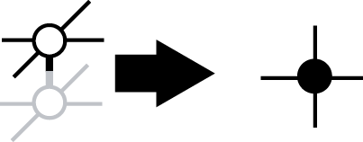a tensor network diagram for the corner transfer matrix representation is given as
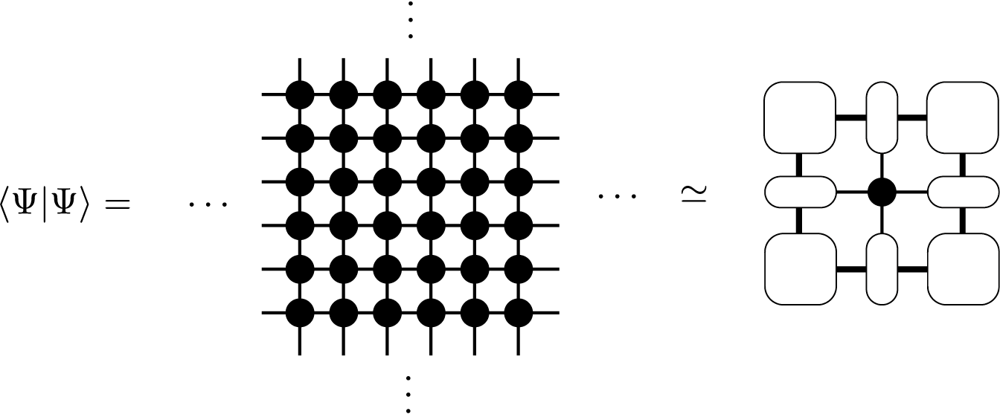A corner transfer matrix and an edge tensor are defined as
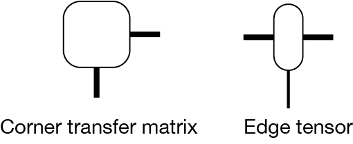The accuracy of the corner transfer matrix representation is determined by the bond dimension \(\chi\) of corner transfer matrices, which is indicated as thick lines in the diagrams.
In the CTMRG algorithm, we iteratively optimise corner transfer matrices and edge tensors by absorbing local tensors until they converges. For example, an absorbing procedure, so called left move, is described as follows:
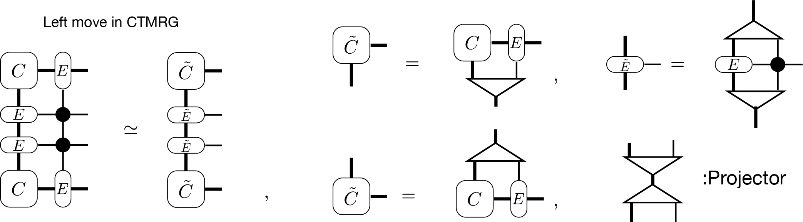The projectors in the above diagram is calculated in several ways [CTMRG] and they reduces the degree of freedoms to \(\chi\).
When we consider iTPS with the bond dimension \(D\) and CTMs with the bond dimension \(\chi\), the leading computation cost of CTMRG scales as \(O(\chi^2 D^6)\) and \(O(\chi^3 D^4)\). Notice that the bond dimension of the double layered tensor network becomes \(D^2\) by using locally contracted tensors. Thus, typically we increase \(\chi\) as \(\chi \propto O(D^2)\). In this setup, the leading computation cost of CTMRG algorithm is reduced to \(O(D^{10})\), while the memory usage scales \(O(D^{8})\). In order to achieve the computation cost discussed above, we need to use a partial singular value decomposition (SVD) (or the truncated SVD) technique. When we use the full SVD instead of the partial SVD, the computation cost becomes \(O(D^{12})\).
Once we obtain the corner transfer matrices and edge tensors, we can also calculate \(\langle \Psi|O|\Psi\rangle\) efficiently. For example, a local magnetization \(\langle \Psi|S^z_i|\Psi\rangle\) is represented as
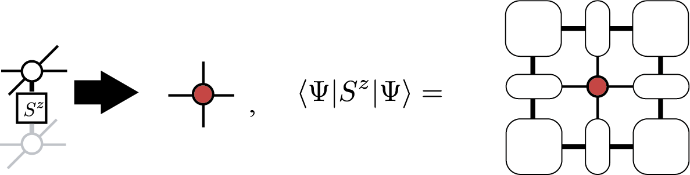and similarly the nearest neighbor correlation \(\langle \Psi|S^z_iS^z_{i+1}|\Psi\rangle\) is represented as
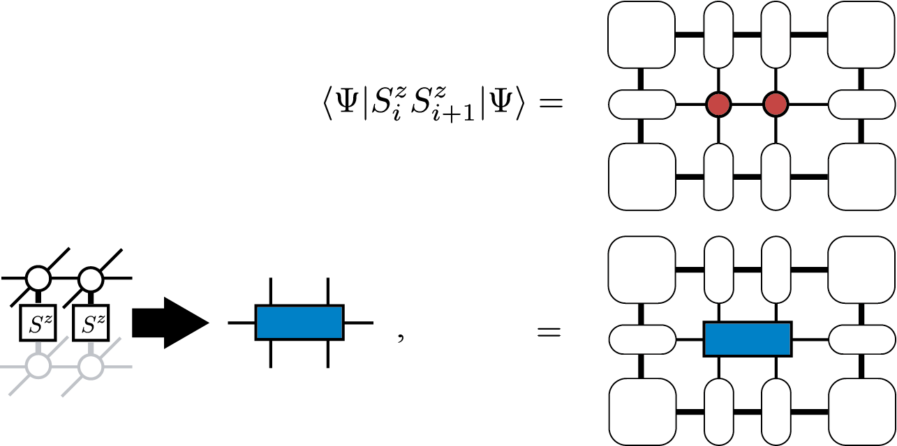Notice that by using the second representation, we can calculate expectation values of any two-site operators. Although we can generalize such a diagram for any operator, the computation cost to contract the tensor network becomes huge for larger clusters.
6.3. Optimization of iTPS¶
In order to use iTPS as variational wavefunctions for the ground state, we need to optimize it so that it give us the minimum energy expectation value,
where \(\mathcal{H}\) represents the Hamiltonian of the target system. Among two types of popular optimization algorithms, the imaginary evolution (ITE) and the variational optimization, we support the ITE in TeNeS. In TeNeS, we consider approximate ITE within the iTPS ansatz:
where \(|\Psi_0 \rangle\) is an arbitrary initial iTPS. If \(T\) is sufficiently large, the left hand side, \(|\Psi^{\mathrm{iTPS}}\rangle\), is expected to be a good approximation of the ground state.
In TeNeS, we assume that the Hamiltonian can be represented as a sum of short range two-body interactions as
and apply Suzuki-Trotter decomposition to the ITE operator with small time step \(\tau\):
We can also consider higher order Suzuki-Trotter decomposition. By using the Suzuki-Trotter decomposition form, the ITE is represented as
where \(N_{\tau} = T/\tau\) is the number of ITEs with sufficiently small \(\tau\). In order to simulate the right hand side of the equation, we divide \(\prod_{\{(i,j)\}}\) into several subsets. In each subset, (local) ITE operators satisfy two properties: they commute with each other and they have the same translation symmetry with the iTPS ansatz. For example, in the case of two-site iMPS for the one-dimensional nearest-neighbor interaction Hamiltonian, we have two subsets:
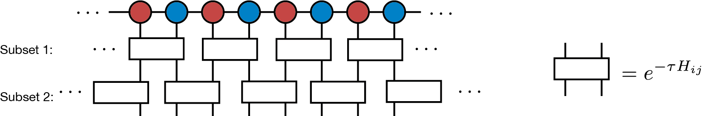Then, we approximate the wavefunction after multiplication of each ITE-operator subset as an iTPS with the bond dimension \(D\):
where \(\prod_{\{(i,j) \in \mathrm{subset}_n \}}\) means the product of operators in the \(n\mathrm{th}\) subset, and \(|\Psi_{\tau}^{\mathrm{iTPS}}\rangle\) is a new iTPS. By using a diagram, it is represented as follows:
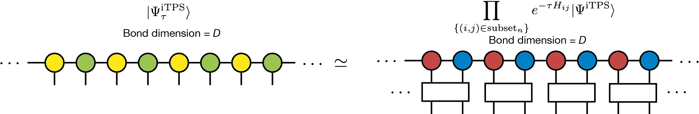Notice that by applying \(e^{-\tau H_{ij}}\) the bond dimension of the exact iTPS representation generally increases. In order to continue the simulation stably, we need to truncate the bond dimension to a constant \(D\).
Naively, efficient truncation can be done by solving the minimization problem
However, in practice, solving this minimization problem needs a huge computation cost because it is a highly nonlinear problem due to the translational symmetry of iTPS. Thus, instead, we usually consider an alternative local problem where we apply only a local ITE operator and try to find optimal iTPS \(|\Psi_{\tau}^{\mathrm{iTPS}}\rangle\) in which only a few local tensors are modified from the original \(|\Psi^{\mathrm{iTPS}}\rangle\). This minimization problem is written as
In the case of the nearest-neighbor interaction on the one-dimensional chain, the diagrams corresponding to this minimization problems are
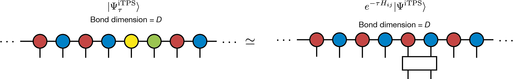The squared norm \(\left \Vert |\Psi_{\tau}^{\mathrm{iTPS}} \rangle - e^{-\tau H_{ij}} |\Psi^{\mathrm{iTPS}}\rangle \right \Vert^2\) can be calculated by using, e.g., CTMRG and we can solve the minimization problem easily [ITE]. Although this new iTPS breaks translational symmetry, we make translationally symmetric iTPS by copying updated local tensors to other parts so that the obtained iTPS can be considered as an approximated solution of the original minimization problem:
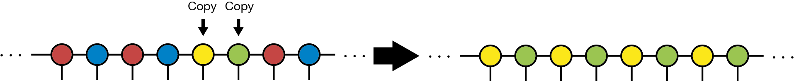This ITE approach is often called as full update. The leading computation cost of the full update come from CTMRG and then it scales as \(O(D^{10})\) or \(O(D^{12})\) depending on SVD algorithms.
The simple update (or simplified update) is a cheaper version of ITE optimization. In order to avoid expensive environment calculation by CTMRG, we consider a part of the tensor network instead to treat the whole [SimpleUpdate] in the simple update. For example, in the case of the nearest-neighbor interaction, we consider the following local optimization problem:
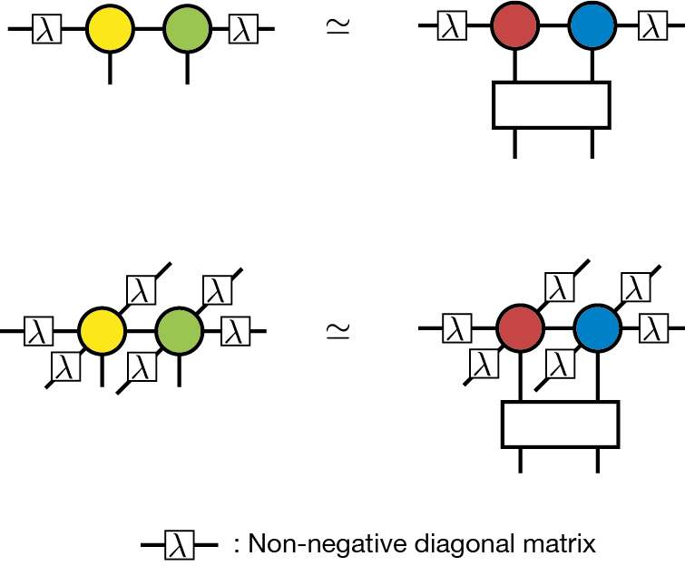In this diagram, \(\lambda_i\) represents a non-negative diagonal matrix considered to be a mean field corresponding to the neglected environment beyond the bond \(i\). The definition of \(\lambda_i\) will be given later. This optimization problem can be viewed as the low rank approximation of a matrix consisting of two tensors and a ITE operator, and then we can solve it by SVD. The procedure of the simple update is given in the following diagram:
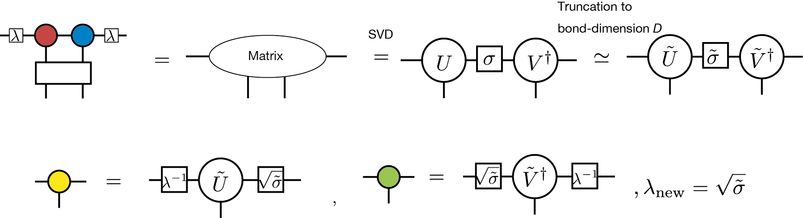The singular values obtained from the SVD of the matrix are used as the mean field \(\lambda\) in the next step. The computation cost of the simple update is \(O(D^{5})\), if we use QR decomposition before we construct the matrix [QR]. Thus, it is much cheaper than that of the full update.
Although the computation cost of the simple update is cheaper than that of the full update, it is known that the simple update shows strong initial state dependence and it tends to overestimate the local magnetization. Thus, for complicated problems, we need to carefully check results obtained by the simple update.
6.4. Real-time evolution by iTPS¶
The algorithms of imaginary time evolution used for computing the ground state, such as the simple update method and the full update method, can also be used to calculate the real-time evolution of a quantum state. In TeNeS, similarly to the case of imaginary time evolution, the quantum state at time \(t\)
is approximated by iTPS, which allows for the calculation of approximate time evolution. The difference between imaginary and real-time evolution lies only in whether the coefficient of the Hamiltonian \(\mathcal{H}\) in the exponent is \(-\tau\) or \(-it\), hence real-time evolution can also be computed using the same simple update and full update methods applied in imaginary time evolution, by employing the Suzuki-Trotter decomposition.
Real-time evolution using iTPS (and other tensor network states) differs significantly from imaginary time evolution used for ground state calculation in two main aspects.
One major difference is the size of the quantum entanglement of the target quantum state. In imaginary time evolution, as the evolution progresses towards the ground state, the quantum entanglement of the state does not become excessively large. Thus, the description by iTPS works well. However, in real-time evolution, typically (unless the initial state’s iTPS is an eigenstate of the Hamiltonian), quantum entanglement can increase over time. To maintain the approximation accuracy of iTPS, it is necessary to increase the bond dimension of iTPS as the time gets longer. Naturally, increasing the bond dimension also increases computational costs, so with realistic computational resources, accurately approximating real-time evolution using iTPS is limited to short times. The applicable time range depends on the model, but for example, in spin models, the limit is often around a time \(t = O(1/J)\) with respect to the typical interaction strength \(J\).
Another difference is the characteristics of the physical phenomenon to be reproduced. When using imaginary time evolution to calculate the ground state, it is sufficient to reach the ground state after a sufficiently long evolution, so minor deviations from the correct path of imaginary time evolution are not a significant issue. On the other hand, in real-time evolution, there is often interest not only in the final state but also in the time evolution of the quantum state itself. To accurately approximate the path of time evolution, it is necessary to not only increase the bond dimension of iTPS but also to make the time increment \(\delta t\) of the Suzuki-Trotter decomposition sufficiently small. Depending on the situation, it may be more efficient to use higher-order Suzuki-Trotter decompositions. In TeNeS, it is possible to handle higher-order Suzuki-Trotter decompositions by editing the evolution section of the input file that is ultimately entered into TeNeS.
6.5. Finite temperature simulation¶
So far, we considered the tensor network representation of a pure state \(|\Psi\rangle\), but similarly, we can consider the tensor network representation for a mixed state at finite temperature
where \(\beta\) represents the inverse temperature corresponding to temperature \(T\) as \(\beta = 1/T\).
Similarly to pure states, if we consider a system of \(N\) quantum spins with \(S=1/2\) at finite temperature, the mixed state can be expressed as
The expansion coefficients \(\left(\rho(\beta)\right)_{s_1,s_2,\dots, s_N}^{s_1', s_2', \dots, s_N'}\) can be expressed, for example, using a Matrix Product Operator (MPO), generalized from MPS to matrices (operators), as
and the corresponding diagram can be drawn as
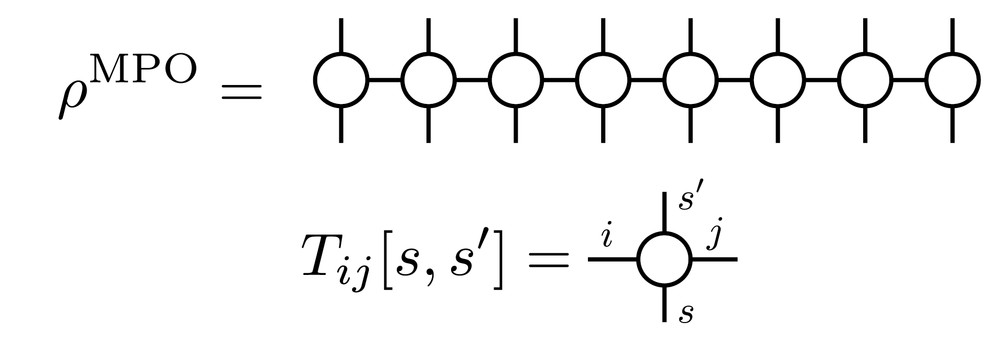For mixed states with translational symmetry, just like in the case of pure states, an infinite MPO (iMPO) can represent the state of an infinite system by repeating the same tensor infinitely. For example, for a one-dimensional, two-site translational symmetric state, the corresponding iMPO diagram would be
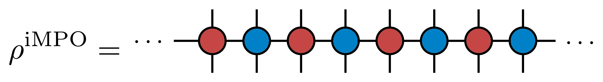As a tensor network represention of mixed states, in TeNeS, we handle a two-dimensional infinite tensor product operator (iIPO) [TPO], specifically assuming a square lattice network with translational symmetry. The diagram for such an iTPO can be written as
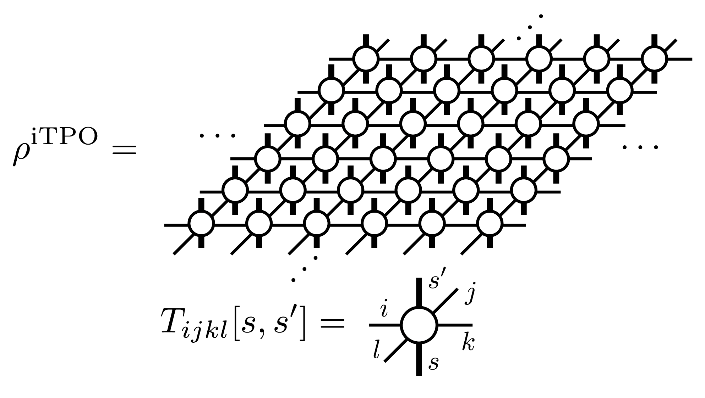In TeNeS, the mixed state at finite temperature \(\rho(\beta)\) is computed using imaginary time evolution from the initial state corresponding to infinite temperature \(\rho(\beta=0)\)
Note that at infinite temperature, the density matrix is the identity matrix. From this property, for example, the iMPO representation of the state at infinite temperature becomes a tensor product of local identity matrices, and the diagram in this case would be drawn as
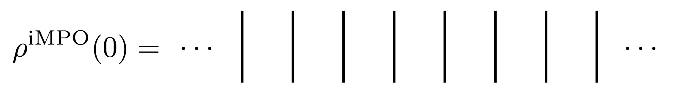with “lines” corresponding to the local identity matrix.
The imaginary time evolution of a mixed state is calculated by a simple extension of the imaginary time evolution for pure states, as an approximate imaginary time evolution within the iTPO representation. The Suzuki-Trotter decomposition, simple update method, and full update method used for pure states can be almost directly applied to the case of mixed states. (TeNeS does not support the full update currently.)
The local minimization problem for mixed states can be described as
and the corresponding diagram, for clarity in the form of iMPO, would be
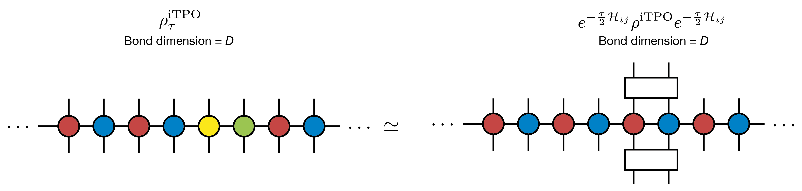The biggest difference between the computations of finite temperature states by iTPO and pure states by iTPS appears in the tensor network for expectation value calculations. The expectation value of a physical quantity \(O\) for a given mixed state \(\rho\) is calculated as
The trace \(\mathrm{Tr}\) corresponds to connecting the corresponding upper and lower legs of the iTPO. Using a tensor obtained by connecting upper and lower legs of a local tensor in iTPO,
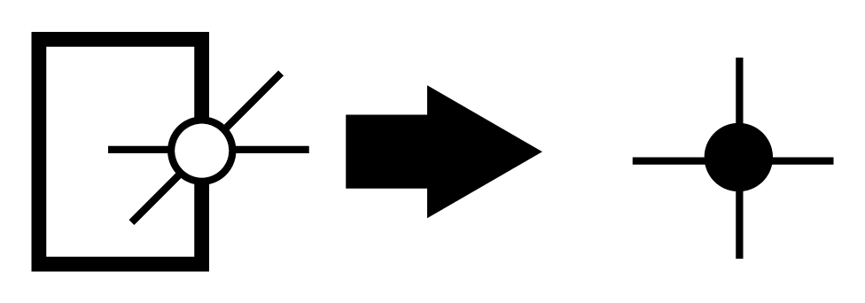the denominator \(\mathrm{Tr} \rho\) becomes the same structure as the two-dimensional square lattice diagram appeared in the expectation values for pure states. Thus, we can apply the same approximate calculation using corner transfer matrix representation and CTMRG.
The computation cost of CTMRG for the corner transfer matrix representation with bond dimension \(\chi\) and iTPO with bond dimension \(D\) scales with \(O(\chi^2 D^4)\) and \(O(\chi^3 D^3)\). Note that this computation cost is smaller compared to CTMRG for pure states with the same bond dimension \(D\). The difference is due to the bond dimension of the tensor indicated by the black circle being \(D^2\) in pure state calculations, while \(D\) for mixed states. Correspondingly, the bond dimension \(\chi\) of the corner transfer matrices can be increased proportionally to \(D\), i.e., \(\chi \propto O(D)\). Under this condition, the computation cost of CTMRG becomes \(O(D^6)\), and the required memory amount becomes \(O(D^4)\). Thus, the computation cost of finite temperature calculations using iTPO is significantly lower than that of iTPS with the same \(D\). It allows us to use larger bond dimensions \(D\) in finite temperature calculations.
Similarly to pure states, once the converged corner transfer matrices and edge tensors are computed, \(\mathrm{Tr} (\rho O)\) can also be efficiently calculated. For example, when we define the tensor containing the operator as
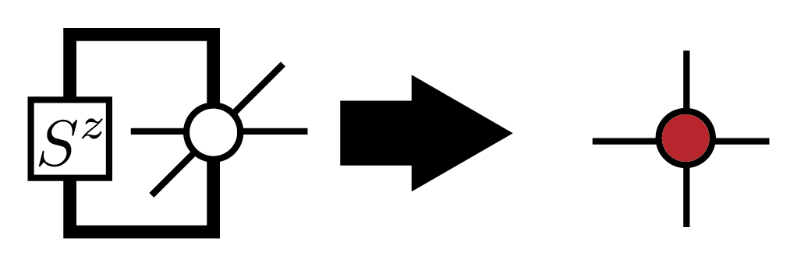the local magnetization \(\mathrm{Tr} (\rho S_i^z)\) is calculated using the same diagram as \(\langle \Psi|S_i^z|\Psi\rangle\).
Lastly, it is important to mention the drawbacks of approximation by iTPO. The density matrix of a mixed state is Hermitian and positive semidefinite, with non-negative eigenvalues. However, when approximating the density matrix with iTPO, this positive semidefiniteness is not guaranteed, and physical quantities calculated from the iTPO approximation might exhibit unphysical behavior, such as energies lower than the ground state energy. This is a problem of iTPO representation, and cannot be avoided just by improving the accuracy of CTMRG in expectation value calculation by increasing the bond dimension \(\chi\). To recover physical behavior, it is necessary to increase the bond dimension \(D\) of iTPO to improve the approximation accuracy of the density matrix.
As an alternative representation to avoid such unphysical behavior, a method has been proposed using purification of the density matrix, representing the purified density matrix with iTPO [Purification]. However, in this case, the diagram appearing in the expectation value calculation becomes a double-layer structure similar to pure states. This structre requires a larger computational cost, and the manageable bond dimension \(D\) becomes smaller than in the direct iTPO representation.
References
[TNS] R. Orús, A practical introduction to tensor networks: Matrix product states and projected entangled pair states, Annals. of Physics 349, 117 (2014). link; R. Orús, Tensor networks for complex quantum systems, Nature Review Physics 1, 538 (2019). link.
[MPS] U. Schollwcök, The density-matrix renormalization group in the age of matrix product states, Annals. of Physics 326, 96 (2011). link
[CTMRG] T. Nishino and K. Okunishi, Corner Transfer Matrix Renormalization Group Method, J. Phys. Soc. Jpn. 65, 891 (1996).; R. Orús and G. Vidal, Simulation of two-dimensional quantum systems on an infinite lattice revisited: Corner transfer matrix for tensor contraction, Phys. Rev. B 80, 094403 (2009). link ; P. Corboz et al., Competing States in the t-J Model: Uniform d-Wave State versus Stripe State, Phys. Rev. Lett. 113, 046402 (2014). link
[ITE] J. Jordan et al., Classical Simulation of Infinite-Size Quantum Lattice Systems in Two Spatial Dimensions, Phys. Rev. Lett. 101, 250602, (2008). link; R. Orús and G. Vidal, Simulation of two-dimensional quantum systems on an infinite lattice revisited: Corner transfer matrix for tensor contraction, Phys. Rev. B 80, 094403 (2009). link
[SimpleUpdate] H. G. Jiang et al., Accurate Determination of Tensor Network State of Quantum Lattice Models in Two Dimensions, Phys. Rev. Lett. 101, 090603 (2008). link
[QR] L. Wang et al., Monte Carlo simulation with tensor network states, Phys. Rev. B 83, 134421 (2011). link
[TPO] A. Kshetrimayum, M. Rizzi, J. Eisert, and R. Orús, Tensor Network Annealing Algorithm for Two-Dimensional Thermal States, Phys. Rev. Lett. 122, 070502 (2019). link
[Purification] P. Czarnik, J. Dziarmaga, and P. Corboz, Time evolution of an infinite projected entangled pair state: An efficient algorithm, Phys. Rev. B 99, 035115 (2019). link; P. Czarnik and J. Dziarmaga, Time evolution of an infinite projected entangled pair state: An algorithm from first principles, Phys. Rev. B 98, 045110 (2018). link